K-Saju V2 · Bright Mulsang · 2026-09-05
화면 리뷰 · U1 EN 재생성 + i18n + KR
Stitch 재생성(V2 DS 고정) → HTML 렌더 780px(게이트 G3 충족) · 카피덱 v2 문장 직접 주입 · em-dash 0 · 금지어 0. 배지명은 U14 확정값(Mirror Lake · Heartwood · Noon Mark 등). 워드마크·가격은 {{BRAND}}·{{PRICE}} 토큰 정책상 SAJU·$8 표기.
U1 · EN 7화면 (최종 후보)
780px · G3 통과카피덱 v2 문장을 프롬프트에 그대로 주입해 재생성한 세트. 랜딩은 카피덱 §2 문구(유일 eyebrow "The ten forms", 히어로 4요소 종결)와 일치.
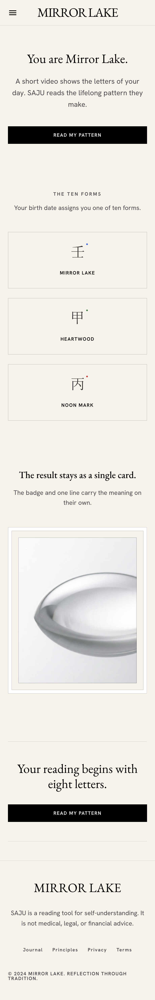
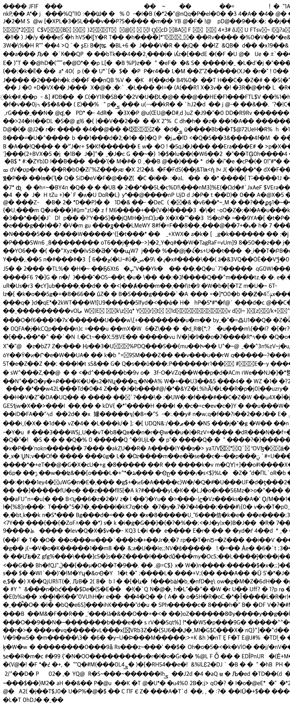
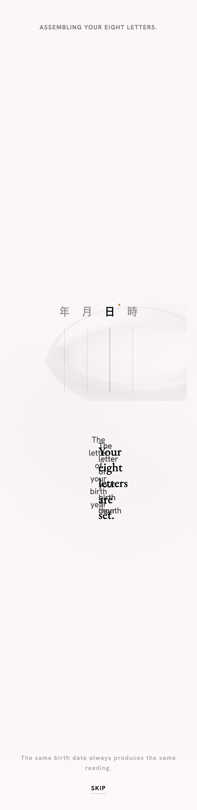

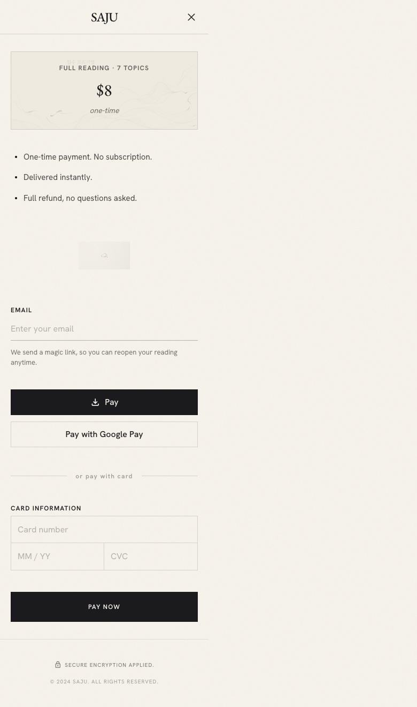
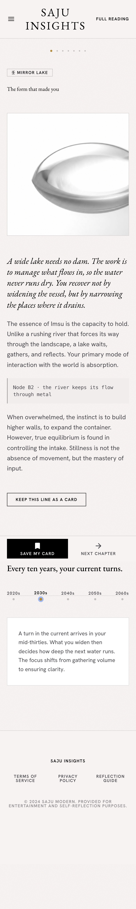

i18n 랜딩 · 9개 로케일
EN-US · EN-GB · JA · ZH · TH · VI · FIL · ID · RU동일 DS(밝은 물성) + 로케일별 카피. 10개 지원 언어 중 KO는 U1 세트에 포함. 태국어·베트남어·키릴 렌더링 확인용.
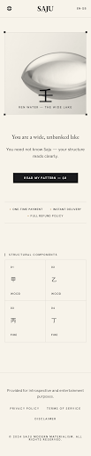
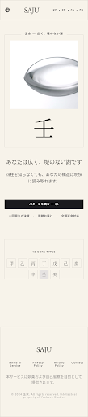
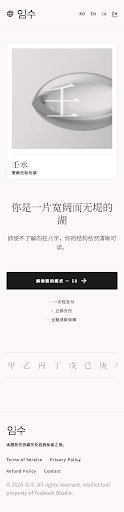
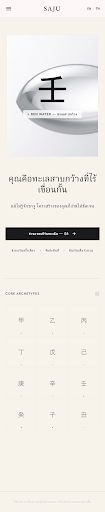
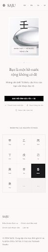
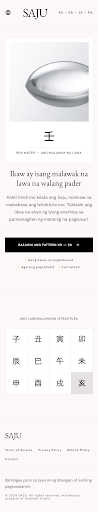
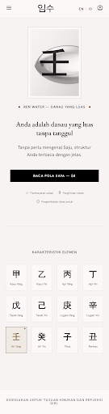
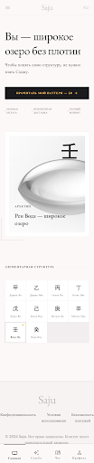
KR · V2 7화면
참고 · 저해상도 렌더한국어 카피 버전. 렌더 해상도가 낮아(썸네일) 판정용은 U1 EN 세트를 기준으로 하고, KR은 카피·구조 참조용.
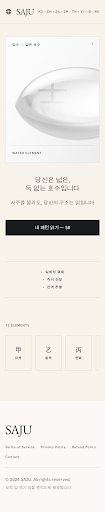
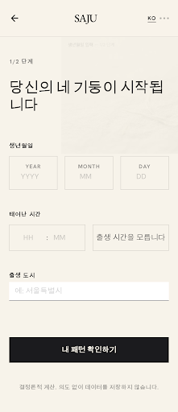
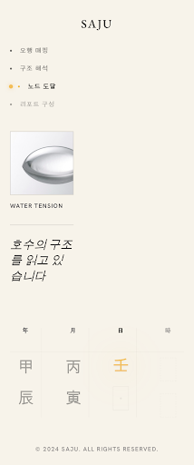
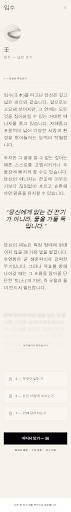
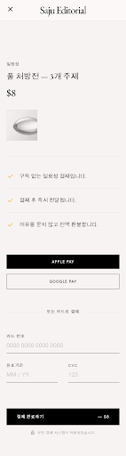
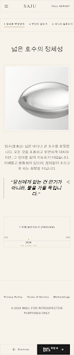
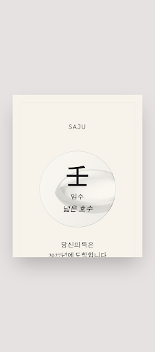